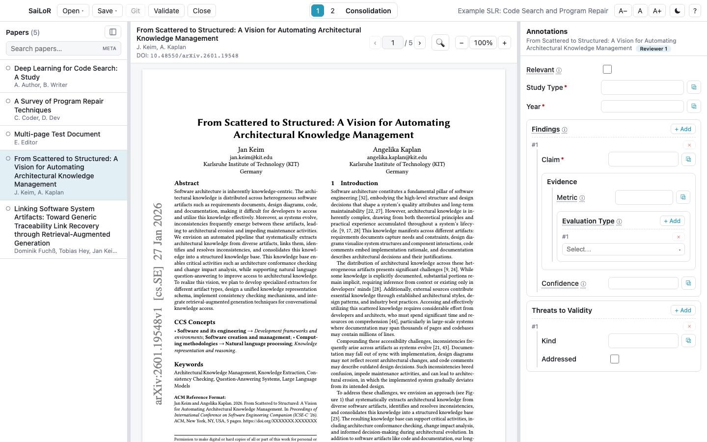
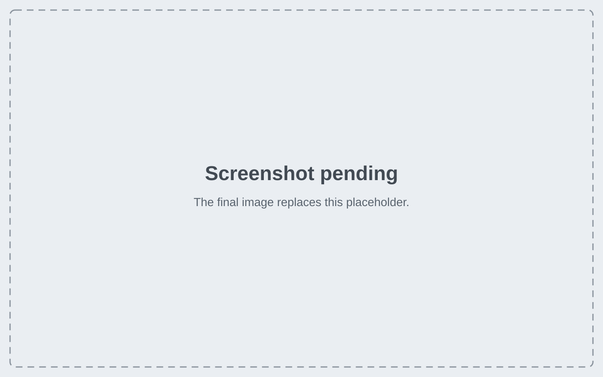

SaiLoR
Read each paper’s PDF beside a structured form. Keep every answer in a plain JSON project file.

Features
Structured annotation
Define the fields you need once, in a schema. Every paper then gets the same form.
- Field types: text, number, yes/no, year, and groups.
- Text fields with fixed options become a dropdown.
- Repeatable groups, such as several findings per paper, with minimum and maximum counts.
- Conditional fields that appear only after another answer (
visibleIf). - Required fields, and an optional Annotation finished mark per paper.
Evidence from the PDF
Keep each answer tied to the text that supports it.
- Select text in the PDF and copy it into a field.
- Highlight text or add sticky notes. Each mark can carry its own comment.
- Link a highlight or note to a field as evidence. Click it later to jump back to the PDF.
- Export your marks into a standalone annotated PDF.

Several reviewers and reconciliation
Two or more people can annotate the same papers without overwriting each other.
- Set 2 to 10 reviewers. Each reviewer works on their own answers.
- The Consolidation seat compares answers field by field with the ⇄ button.
- Fields where all reviewers agree are filled in for you.
- ⚠ Disagreements lists every field that reviewers answered differently.
- ⚖ Agreement reports Cohen’s κ, Fleiss’ κ, and Krippendorff’s α.
Screening
Screen titles and abstracts before you annotate full papers.
- Include or exclude each paper. Exclusion reasons are set in advance.
- Keyboard shortcuts: I to include, E to exclude, U to undecide, and 1 to 9 for a reason.
- A summary reports the counts for each decision and each exclusion reason.
- New from screening… starts the next phase from a screening project.
Import papers and find duplicates
- Add single PDFs, or a whole folder including its sub-folders.
- Import references from BibTeX (
.bib), RIS (.ris), or CSL-JSON files. - Probable duplicates are flagged. You decide each one. Nothing merges silently.
AI-assisted annotation (preview)
AI support is off unless the project turns it on with "ai": true in config.
- Prompt mode sends one request per paper. Agent mode uses tools and a judge to check the evidence. It takes longer and costs more.
- Each suggestion is checked against the schema before you see it.
- You review each suggestion, can edit it, and then apply it. AI-written fields stay marked until you confirm them.
- Use a cloud provider with your own API key, or a local model server.
- AI use is recorded in the project file, with the provider and model.
Git integration
- SaiLoR runs your own
gitprogram. It uses your existing credentials. - Review each changed field before you commit it.
- Pull and merge reviewers’ work field by field. Only a field that both sides changed asks you to choose.
- Switch branches, and browse the history of the project file.
Local first and private
- SaiLoR has no account and no server of its own.
- Your project files stay in folders you choose.
- API keys are stored encrypted with your operating system’s secure storage.
- This page loads no scripts, fonts, or trackers from other sites.
Platforms
Download the file for your system from the latest release.
| System | File | First start |
|---|---|---|
| macOS, Apple silicon | SaiLoR-<version>-macos-arm64.dmg |
macOS blocks the unsigned app. Allow it in Privacy & Security. |
| macOS, Intel | SaiLoR-<version>-macos-x64.dmg |
Same as Apple silicon. |
| Windows, x64 | SaiLoR-<version>-windows-x64.exe |
SmartScreen warns about the unsigned installer. Choose More info, then Run anyway. |
| Linux, x86_64 | SaiLoR-<version>-x86_64.AppImage |
Make the file executable and run it. |
Warning: the releases are not signed with an Apple or Microsoft certificate. The first start shows a warning. The full steps are in the README.
There are no builds for Windows on Arm or Linux on arm64.
Try it online
The online demo runs SaiLoR in your browser. Try the interface before you install the app.
- The demo opens example projects. They use papers by Jan Keim from arXiv, and the paper From Scattered to Structured.
- Nothing you do in the demo is saved.
Warning: use the desktop app for real review data. The demo does not keep your work.
Quickstart
Install a release
- Download the file for your system from the latest release.
- Install the app. Follow the steps for your system in the table under Platforms.
- Open the app. Create a project as shown in Create your first project.json.
Run the development version
Use this route to change the code. You need Git and Node.js 24, the version the CI uses.
git clone https://github.com/Gram21/SaiLoR.git
cd SaiLoR
npm install
npm run dev:electronHow to cite
Cite SaiLoR through its Zenodo record. The DOI is 10.5281/zenodo.23804729. Add the version you used.
@software{keim_sailor,
author = {Keim, Jan},
title = {{SaiLoR}},
doi = {10.5281/zenodo.23804729},
url = {https://github.com/Gram21/SaiLoR},
license = {GPL-3.0-only}
}License
SaiLoR is free software under the GNU General Public License, version 3 only (GPL-3.0-only). Read the LICENSE file for the full terms.